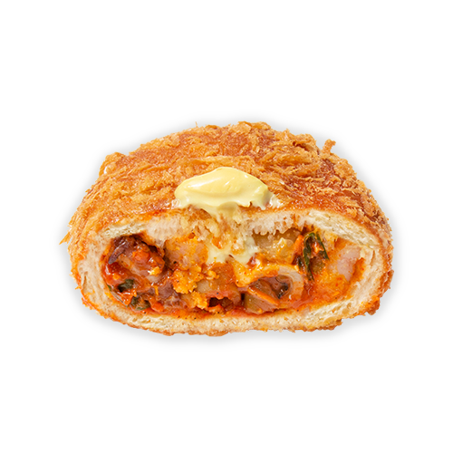

1/4
카레고로게
[와썹맨 쭈니형도 반한 최애 고로케 성심당 카레고로게]
부드럽고 촉촉한 빵에 큼지막한 당근, 토마토, 양파가 대범하게 쏙쏙! 성심당만의 비법으로 직접만든 수제 카레 소스와 쫄깃한 불고기로 걸쭉한 카레 고로게 맛의 진수를 느낄 수 있게 해줍니다. 가득찬 충전물 만큼이나 든든하여 카레라이스 한 그릇의 만족을 성심당 카레고로게로 느낄 수 있습니다. 통통하게 가득찬 충전물 만큼이나 든든한 카레코로케를 따뜻하게 데워 한 끼 식사로, 출출할때 간식으로 다채롭게 즐겨보세요!
2,800원
유통기한
보관방법
배송비
사이즈
당일섭취 권장상품
직사광선을 피하고 서늘한 곳 보관
선불 3000원
7 * 11.5
같은 카테고리 인기 제품
알레르기정보
밀, 우유, 난류(가금류), 닭고기, 쇠고기, 돼지고기 함유/본 제품은 난류(가금류), 우유, 메밀, 아황산류, 대두, 토마토, 호두, 땅콩, 닭고기, 쇠고기, 밀, 새우, 돼지고기, 오징어, 잣을 사용한 제품과 같은 시설에서 제조하고 있습니다.
성분표시
중력(미국/호주) 양파(국산) 우등심(뉴질랜드) 카레(일본)